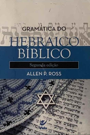
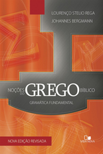
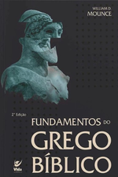

“Tecnologia e profundidade histórica para conectar você ao sopro original de Deus.”
Iniciar o estudo das línguas bíblicas originais é dar um passo profundo em direção ao conhecimento de Deus nas Escrituras. Essa caminhada repleta de descobertas e de desafios práticos transformará não apenas sua compreensão do texto sagrado, mas também a forma como você enxerga a vida e como viver melhor através dela.
Antes de começar: o lugar das línguas originais
Dentro do processo de estudo de um texto antigo, a análise léxico-sintática (estudo das línguas originais) é um dos passos de grande valor. Entretanto este valor perde sua validade se não for acompanhado dos demais passos do processo para a compreensão exata da mensagem transmitida. Há o sério risco de interpretações erradas se desconsiderar a importância do contexto histórico-cultural da época do escrito, do contexto do livro, das figuras de linguagem, aspectos semânticos e outros passos regidos pela disciplina chamada Hermenêutica.
A boa prática do estudante honesto, que deseja ver a verdade do texto, deve ser a de considerar e anotar sua descoberta como provisória até que junte todas as “peças”.
Interpretar é a coisa mais fácil do mundo quando não se deseja saber a real mensagem transmitida!
Escolha uma língua. Comece pelo hebraico (com aramaico) ou pelo grego koiné — os dois caminhos têm o mesmo formato de currículo.
Comece pela fundação. Alfabeto, pronúncia e leitura antes de qualquer conjugação avançada.
Estabeleça uma rotina. De 30 a 60 minutos por dia superam maratonas esporádicas de fim de semana.
Rota de crescimento em 3 passos
Comece pela Fundação (Nível 1): escolha uma língua e domine alfabeto, vogais e pronúncia antes de conjugações. Sem essa base, a memorização vira adivinhação.
Consistência prática:30–60 min/dia combinando Anki (repetição espaçada) e contato diário com o texto. A constância supera maratonas de fim de semana.
Obras recomendadas: gramáticas didáticas de referência para estudantes brasileiros — Rega no grego e Ross no hebraico (ver tabela de livros abaixo).
Para descobrir e organizar recursos, use a Caixa de Ferramentas: busca dinâmica sem acento-sensibilidade, filtros por idioma e nível, favoritos e “mineração” para o seu cofre local (dados somente neste dispositivo).
Livros de referência
Quatro obras estruturam a recomendação do portal. As capas abaixo são as imagens oficiais dos títulos (fontes em covers/FONTES.md); direitos de imagem pertencem às respectivas editoras/autores (proveniência em covers/FONTES.md).

Ross — Hebraico
Capa da edição brasileira Gramática do Hebraico Bíblico (Allen P. Ross, Editora Vida).
Método clássico respeitado que une linguística moderna com tradições filológicas antigas. Excelente para consolidar alefato, niqqud e estado construto.

Rega — Grego (com Bergmann, Vida Nova)
Referência essencial para o estudante brasileiro. Didática indutiva, livre de jargões complexos, com foco em morfologia nominal e declinações.

Mounce — Grego (Vida)
Abordagem didática de morfologia nominal e verbal em português, alinhada ao percurso inicial deste portal até a preparação para a sintaxe.
Wallace — Sintaxe (Batista Regular)
Uma das gramáticas de sintaxe exegética do grego do Novo Testamento mais influentes e amplamente utilizadas em nível intermediário e avançado.
Os quatro obras de referência — nível e foco didático
Obra
Autor /Editora
Níveis
Foco didático
Gramática do Hebraico Bíblico
Allen P. Ross — Vida
1–3
Alefato, niqqud, estado construto, morfologia com base filológica
Morfologia nominal e verbal para leitura; ponte para sintaxe
Gramática Grega: Sintaxe Exegética
Daniel B. Wallace — Batista Regular
4–5
Casos, artigo, tempos verbais em chave teológica/exegética
Combinação prática: Rega/Mounce + Wallace
Rega/Mounce — “O que trazem”
Foco em morfologia nominal e verbal: formas, paradigmas, reconhecimento. Indicado das semanas 1 a 20 (níveis 1–3). Responde “esta palavra é o quê?”.
Wallace — “Por que importa teologicamente”
Foco em sintaxe exegética: casos, artigo, aspecto e uso. Indicado da semana 21 em diante (níveis 4–5). Responde “esta construção sustenta qual leitura?”.
Ciclo de integração (rotina sugerida)
Traduzir com Rega/Mounce (sentido primeiro, forma à vista);
Parsing morfológico completo das formas novas ou duvidosas;
Consultar Wallace na seção correspondente (caso, artigo, verbo) e registrar uma nota exegética de 2–3 linhas.
Adequação de níveis e semanas é uma organização editorial deste portal (vigência: setembro de 2026) para o material indicado — não é um cronograma oficial das editoras.
Central de aplicativos móveis
Destaque para opções sem anúncios, que respeitam o foco do estudo:
Sofia App — recomendação editorial do curador para estudantes: ferramenta técnica e, conforme verificação em setembro de 2026, apresentada pelo fornecedor como livre de propagandas. Integra Strong, GK Codes e domínios semânticos de Louw-Nida.
Ginoskos — gramática dinâmica, SRS e vocabulário ativo; suporta hebraico, grego, aramaico, latim e siríaco.
Global Bible Tools — 100% gratuito e sem anúncios, com áudio sincronizado e suporte offline.
Outros apps populares do mercado podem exibir anúncios ou cobranças; verifique a política de cada fornecedor antes de assinar. O catálogo completo está na Caixa de Ferramentas.
Metodologia de aceleração com o Notebook Gemini
Uso responsável de IA para praticar — nunca para substituir a leitura do texto:
Ditados e parsing reverso
A IA dita formas; você escreve raiz, pessoa, tempo/aspecto. Depois confira em gramática confiável.
Morfologia e desvios
Liste formas irregulares (nouns fortes/fracos, waw-conjuntivo) e peça exercícios de classificação.
Co-mentoria exegética
A IA levanta hipóteses sintáticas; você confere no texto, no léxico e com um mentor.
Regras de ouro: (1) a IA auxilia a prática, nunca substitui a leitura do texto original; (2) explicações geradas por IA não são scholarship autoritativo — valide sempre em gramáticas, léxicos e professores qualificados; (3) não cite a IA como fonte acadêmica.